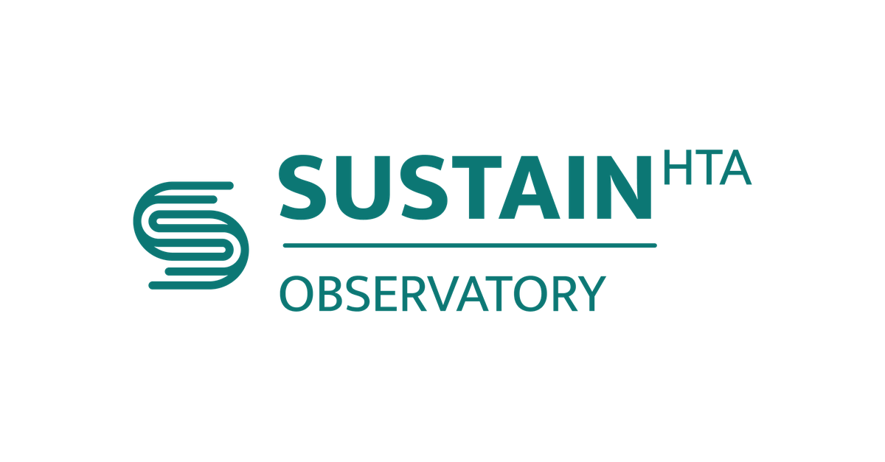

Framework to determine impact of retracted studies on a review
Cochrane's framework for a review that has already been published and is then found to include a study with an associated retraction. The framework…
Open in SUSTAIN-OBS
Cochrane's framework for a review that has already been published and is then found to include a study with an associated retraction. The framework…
Open in SUSTAIN-OBS